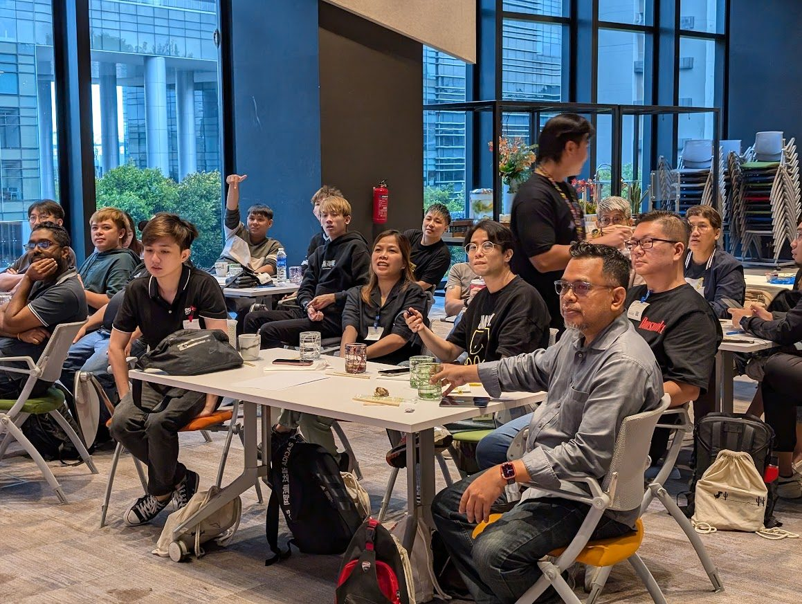

02Seen on the floor현장에서 보이는 것
Results you can actually point at, across APAC markets.실제로 가리킬 수 있는 결과물. APAC 시장 곳곳에서.
Negotiated a hero zone at the Lotte Hi-Mart Jamsil Megastore on the strength of partnership, then anchored it with compatible partner devices so every brand in the space gained. That value exchange replaced rent. I led the space, fixture build, and install from first sketch to opening day.롯데 하이마트 잠실 메가스토어의 히어로 존을 파트너십의 힘으로 협상해 확보했습니다. 호환 파트너 기기들을 한 공간에 모아 모든 브랜드가 이득을 보는 구조를 만들었고, 그 가치가 임대료를 대신했습니다. 공간 기획부터 집기 제작, 설치, 오픈까지 직접 이끌었습니다.


From train-the-trainer programs and region-by-region technician roadshows to a partner in-house broadcast and a YouTube creator collaboration, I design training in whatever format the floor needs, deliver it personally, and localize the framework across markets.TTT(강사 양성) 프로그램과 지역 단위 기사 교육 로드쇼부터 파트너 사내 방송 출연, 유튜브 크리에이터 협업까지. 현장에 필요한 형식이라면 무엇이든 직접 설계하고 진행하며, 같은 프레임워크를 시장마다 현지화합니다.



Spec sheets do not make people feel a feature. For the Pixel 4 launch in Taiwan, we removed the claw machine’s joystick so Motion Sense, the launch’s hero feature, was the only way to play. I oversaw the build on a tight deadline, and a feature people had only read about became an experience they lined up for.스펙 시트로는 기능이 와닿지 않습니다. 대만 픽셀 4 런칭에서 인형뽑기 기계의 조이스틱을 떼어내고, 런칭의 핵심 기능인 모션 센스로만 조작하게 만들었습니다. 빠듯한 마감 속에 제작을 직접 감독했고, 글로만 읽던 기능이 줄 서서 즐기는 체험이 되었습니다.
Built the field and retail foundation for Google’s first Pixel launch in India, recruiting, onboarding, and training the on-floor force across major cities in four months on the ground.구글의 인도 첫 픽셀 출시를 위한 필드·리테일 기반을 세웠습니다. 4개월간 현장에 머물며 주요 도시의 현장 인력을 채용하고 교육했습니다.